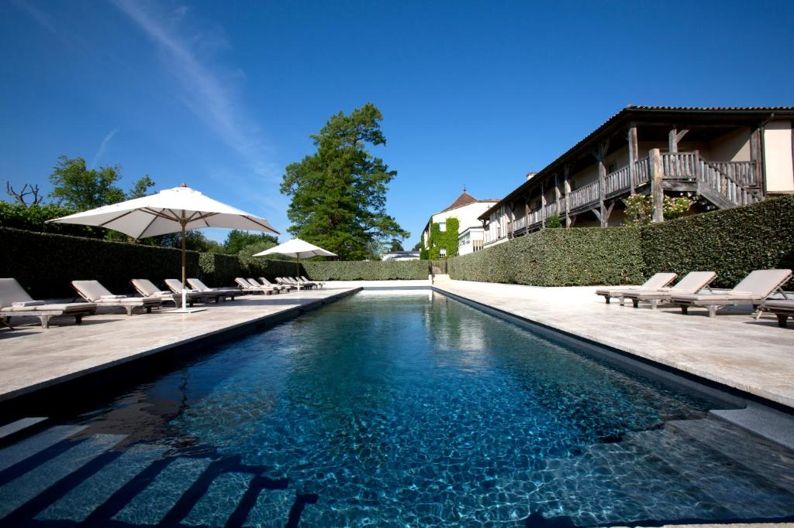
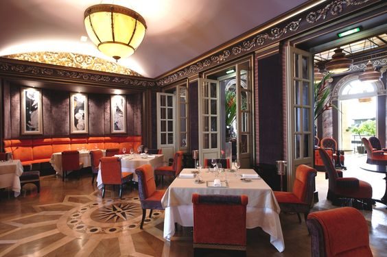
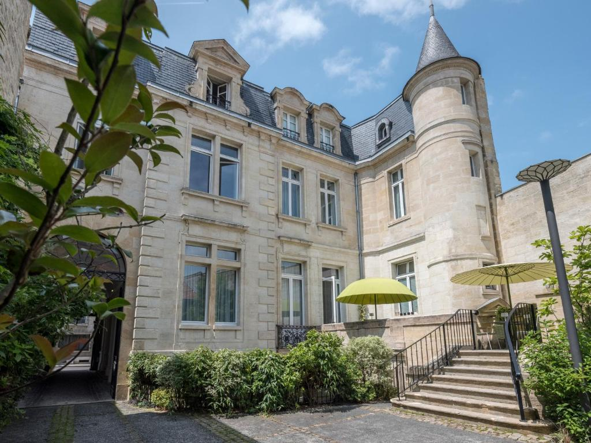
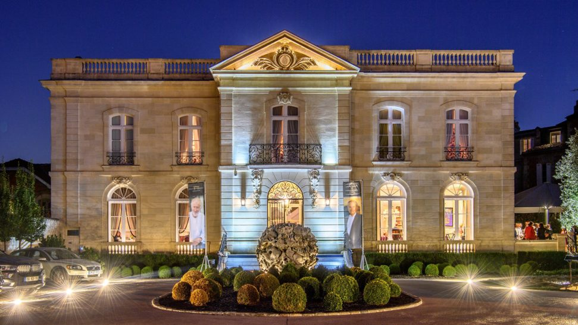
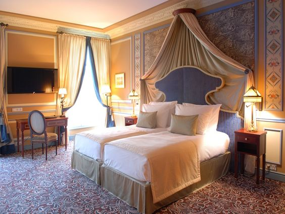

Let's Travel The World!
1. Les Sources de caudalie
Cet hôtel de luxe offre une expérience unique et est situé au centre du vignoble bordelais. Il est connu pour sa cuisine gastronomique, son spa et son cadre magnifique. L’hôtel est réputé pour ses services de spa qui incluent la vinothérapie.
Chambre Prestige : Cette chambre dispose d’un lit supplémentaire ou d’un berceau et peut accueillir jusqu’à deux personnes. Le prix de départ par nuit est de 19,12 $ pour les enfants de moins de deux ans et de 47,80 $ pour les adultes.Suite : Cette chambre a la capacité d’accueillir jusqu’à deux personnes et offre un berceau ou un lit supplémentaire. La fourchette de prix pour une nuit est de 1 016 $ à 1 336 $ (USD). L’installation d’un lit bébé coûte 20 euros, et l’ajout d’un lit supplémentaire coûte 50 euros dans une chambre ou une suite prestige.

2.Le Grand Hôtel de Bordeaux & Spa
Cet hôtel cinq étoiles est réputé pour son architecture ancienne de bon goût et est situé au cœur de la ville. Il dispose d’un hébergement cinq étoiles, d’un restaurant étoilé au guide Michelin et d’un spa avec un bain à remous sur le toit surplombant la ville.
Situation : Au cœur du quartier historique de Bordeaux, l’hôtel est situé juste en face du Grand Théâtre.Chambre Classique : Cette chambre contient un lit supplémentaire ou un berceau et peut accueillir jusqu’à deux personnes. Le prix varie de 300 $ à 400 $ par nuit (USD).
Chambre Supérieure : Cette chambre dispose d’un lit supplémentaire ou d’un berceau et peut accueillir jusqu’à deux personnes. Le prix varie de 400 $ à 500 $ par nuit (USD). Chambre Deluxe : Cette chambre dispose d’un lit supplémentaire ou d’un berceau et peut accueillir jusqu’à deux personnes. Le prix varie de 500 $ à 600 $ par nuit (USD).Junior Suite : Avec un berceau ou un lit supplémentaire, cette chambre peut accueillir jusqu’à trois personnes. Le prix varie de 700 $ à 800 $ (USD) par nuit. Suite : Avec l’option d’un berceau ou d’un lit supplémentaire, cette suite peut accueillir jusqu’à trois personnes. À partir d’environ 1 000 $ à 1 100 $ (USD) chaque nuit, le prix

3.Yndo Hotel
L’hôtel Yndo est un hôtel de charme situé au cœur de Bordeaux, réputé pour son service personnalisé et ses chambres élégantes et décorées de manière unique. C’est une option fantastique pour les touristes à la recherche d’une rencontre spéciale et privée.
Situation : L’hôtel est situé dans le centre de Bordeaux, à proximité des principaux sites touristiques de la ville à pied.Chambre Standard : Cette chambre contient un lit supplémentaire ou un berceau et peut accueillir jusqu’à deux personnes. La fourchette de prix pour une nuit est de 422 $ à 518 $ (USD). Suite : Cette chambre a la capacité d’accueillir jusqu’à deux personnes et offre un berceau ou un lit supplémentaire. La fourchette de prix pour une nuit est de 747 $ à 878 $ (USD).

4.La Grande Maison de Bernard Magrez
Cet hôtel de luxe dispose d’un restaurant deux étoiles Michelin à l’intérieur d’un domaine du 19ème siècle. Il est réputé pour sa cuisine exquise et son décor somptueux.
Situation : L’hôtel est situé dans le centre de Bordeaux, à proximité des principaux sites touristiques de la ville à pied.Il y a six chambres dans l’hôtel, et chacune a un design et une atmosphère distincts.Le prix de chaque nuit varie en fonction du type de chambre et de la saison, allant de 545$ à 1 000$ (USD).

5.Hôtel Burdigala Bordeaux - MGallery
Situé dans le centre-ville, l’Hôtel Burdigala est un hôtel 4 étoiles contemporain qui propose un hébergement agréable et des chambres bien aménagées. C’est une option pratique pour les vacanciers ainsi que pour les hommes d’affaires.
Situation : L’hôtel est idéalement situé à Bordeaux, à proximité des principaux sites touristiques de la ville.Chambre Standard : Cette chambre contient un lit supplémentaire ou un berceau et peut accueillir jusqu’à deux personnes. La fourchette de prix pour une nuit est de 254 $ à 446 $ (USD). Suite : Cette chambre a la capacité d’accueillir jusqu’à deux personnes et offre un berceau ou un lit supplémentaire. La fourchette de prix pour une nuit est de 315 $ à 484 $ (USD).
